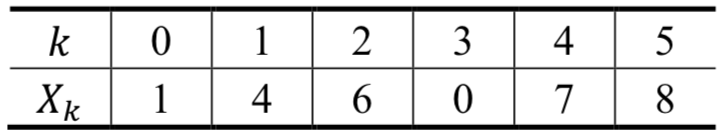
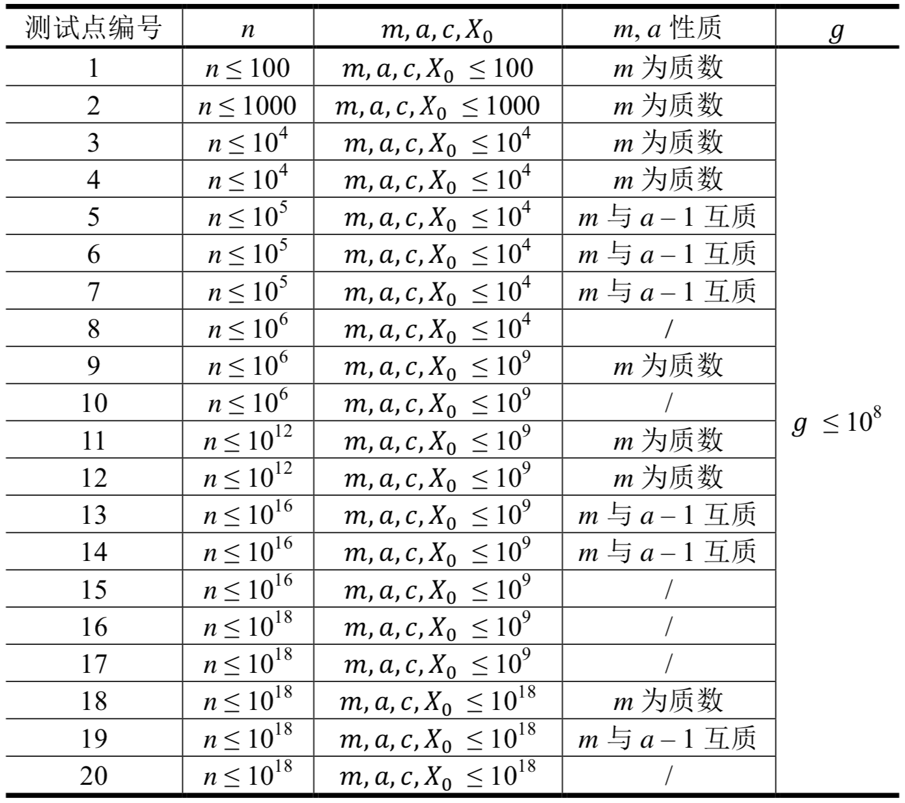

栋栋最近迷上了随机算法，而随机数生成是随机算法的基础。栋栋准备使用线性同余法（Linear Congruential Method）来生成一个随机数列，这种方法需要设置四个非负整数参数$𝑚, 𝑎, 𝑐, 𝑋_0$，按照下面的公式生成出一系列随机数<$𝑋_𝑛$>：$𝑋_{𝑛+1}= (𝑎𝑋_𝑛+ 𝑐)\bmod 𝑚$
其中$\bmod 𝑚$表示前面的数除以$𝑚$的余数。从这个式子可以看出，这个序列的下一个数总是由上一个数生成的。
用这种方法生成的序列具有随机序列的性质，因此这种方法被广泛地使用，包括常用的C++和Pascal的产生随机数的库函数使用的也是这种方法。
栋栋知道这样产生的序列具有良好的随机性，不过心急的他仍然想尽快知道$𝑋_𝑛$是多少。由于栋栋需要的随机数是0, 1, ... , 𝑔 − 1之间的，他需要将$𝑋_𝑛$除以$𝑔$取余得到他想要的数，即$𝑋_𝑛 \bmod𝑔$，你只需要告诉栋栋他想要的数$𝑋_𝑛 \bmod𝑔$是多少就可以了。
包含6个用空格分割的整数$𝑚, 𝑎, 𝑐, 𝑋_0, 𝑛$和$𝑔$，其中$𝑎, 𝑐, 𝑋_0$是非负整数，$𝑚, 𝑛, 𝑔$是正整数。
输出一个数，即$𝑋_𝑛 \bmod𝑔$。
11 8 7 1 5 3
2
【样例说明】
<$𝑋_𝑛$>的前几项依次是：

因此答案为$𝑋_5 \bmod 𝑔 = 8 \bmod 3 = 2$。
【数据规模与约定】

对于所有数据，$𝑛≥1，𝑚≥1，𝑎≥0，𝑐≥0，𝑋0≥0，𝑔≥1$。
 Comet OJ
Comet OJ